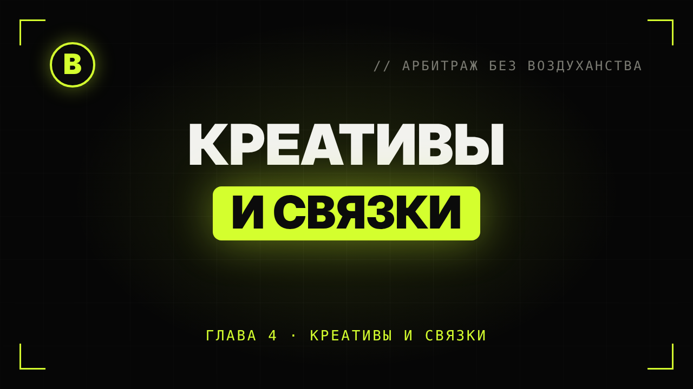
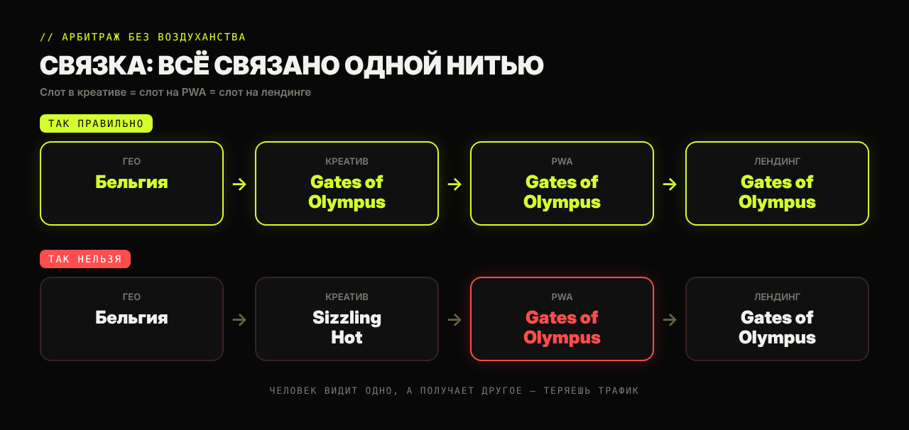
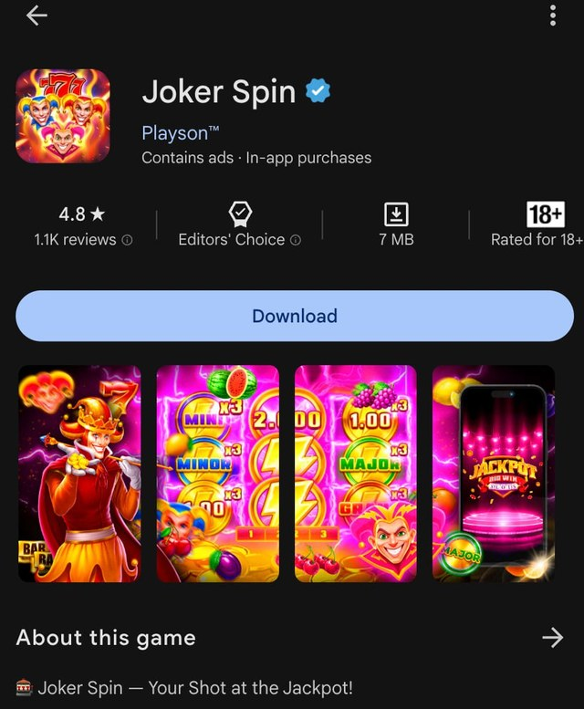
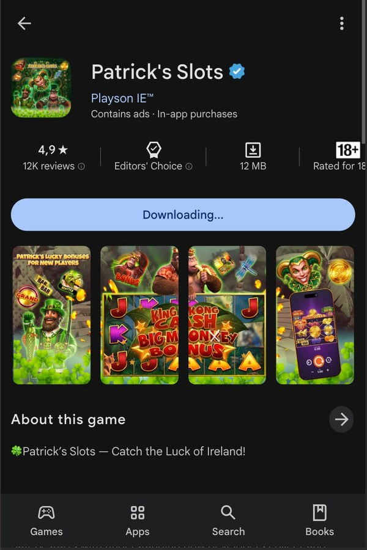
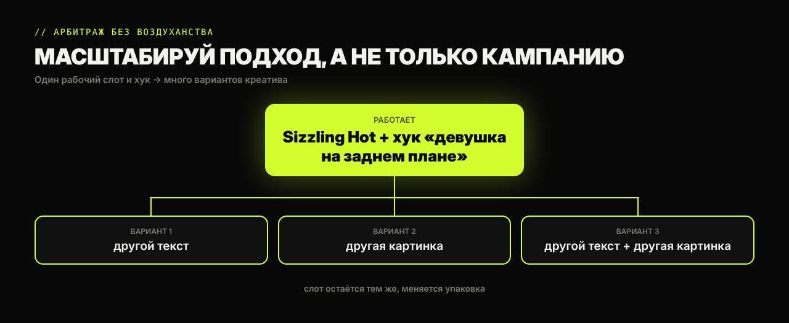

Креативы и связки

Что такое связка
Связка — это цепочка из нескольких частей: ГЕО, креатив, PWA и лендинг. Все части взаимосвязаны.
Если в креативе игра Gates of Olympus, то и в PWA должна быть Gates of Olympus. Нельзя, чтобы в креативе был, например, Sizzling Hot, а в PWA Gates of Olympus. Это лишь один пример, таких связок миллион, и зайти может самая разная.

Пример: хорошая и плохая связка
Берём один и тот же креатив со слотом Royal Joker и смотрим, на какое PWA он ведёт.

В креативе джокеры и слот Royal Joker, в PWA тоже джокеры. Человек видит то, что ожидал.

Креатив про Royal Joker, а в PWA ирландская тема и совсем другие слоты. Ожидание не совпало с тем, что получил человек.
Если термины незнакомы
PWA — приложение, которое ставится на телефон прямо из браузера (в главе 2 мы брали такое через сервис для приложений). Креатив — рекламная картинка или видео. Хук — первая секунда креатива, которая цепляет.
С чего начать тест
Изначально советую тестировать на мультислотовой PWA. Это когда в приложении очень много игр: Royal Joker, Gates of Olympus, Supercharged Flowers и так далее.
Откуда брать идеи
Идею нужно вычитывать со спая (в главе 1 мы это уже обсуждали). Сейчас в этом помогает и искусственный интеллект: он может рассказать про страну, про индустрию гемблинга там, что можно и какой подход использовать.
ИИ даёт направление, а не готовый ответ. Всё, что он рассказал про страну и правила, проверяй по другим источникам.
Форматы креативов
Здесь тоже всё индивидуально. По практике, UGC в последнее время не работает. Лучше идут motion и статика.
Статика всегда очень дешёвая, но всё зависит от подхода и от слота. Например, Sizzling Hot — всегда был дешёвым подходом. Слот очень консервативный и привлекает платёжеспособную аудиторию. Молодёжь сейчас везде неплатёжеспособна, а нам нужен хороший ROAS (окупаемость рекламы).
Про ROAS: пример по цифрам
Платформы (Xtend, Soft2Bet, самописные, SoftSwiss) выставляют условие по окупаемости, например 50%. Пример: на 100 депозитов с средним чеком около $50 сумма депозитов получается около $5000.
Держи это в голове и выписывай подходы, которые собираешься протестировать: что работает, а что нет.
Как делать креативы
Хорошие креативы делай только с дизайнером. Не жалей денег.
Если креатив слишком вылизанный, он может не понравиться самому Facebook и показываться не той аудитории. Креатив должен быть чуть «живым» и странноватым, не всё должно быть идеально.
Бюджет на тест
Даже если ты в команде, выдели себе тестовый бюджет. Например, $3000 на Бельгию. Морально эти деньги ты уже потерял. Но из этих $3000 нужно вытащить максимум информации: чтобы не допускать ошибок в будущем.
Как масштабировать то, что зашло
Масштабировать можно подходом креативов. Допустим, зашёл подход со слотом Sizzling Hot и хуком, где в начале на заднем плане разговаривает девушка. Дальше ты масштабируешь его с другим текстом, с другой картинкой, но слот тот же.

Масштабируй не только рекламные кампании, но и креативы, чтобы выжать максимум из подхода, а не просто из кампании.
Типичные ошибки
- Сливать бюджет и не думать, почему так вышло. Любой слив нужно разобрать.
- Быть негибким. Нужно постоянно что-то менять и пробовать.
- Копировать всё со спая, например заливать чужие креативы.
Новые главы выходят в канале. Подпишись, чтобы не пропустить.
Подписаться на «Воздухан»